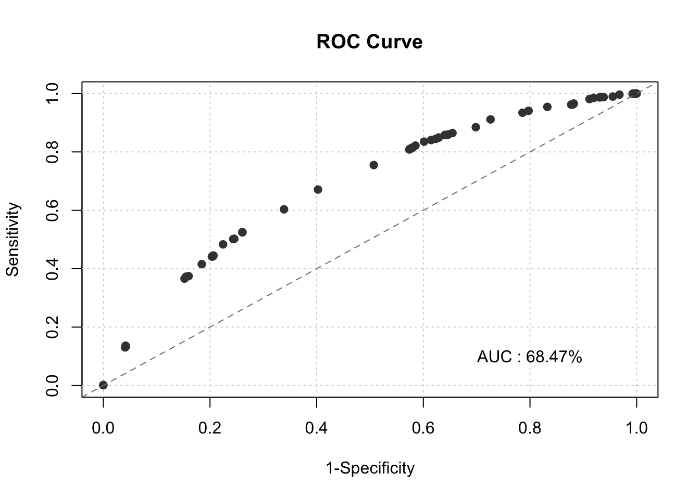

Chapter 2 Initial Score Card
- Dropping Division, Nationality, Age, and Number of Children for regulatory requirements
accepts<-subset(accepts, select=-c(DIV, CHILDREN, NAT, AGE))
rejects<-subset(rejects, select=-c(DIV, CHILDREN, NAT, AGE))
accepts$good <- abs(accepts$GB - 1)2.1 Exploratory Data Analysis
- unique value for each variable
print(as.data.frame(lapply(lapply(accepts,unique),length)))## PERS_H TMADD TMJOB1 TEL NMBLOAN FINLOAN INCOME EC_CARD BUREAU LOCATION LOANS REGN CASH PRODUCT RESID
## 1 10 32 33 3 3 2 27 2 3 2 9 9 29 7 3
## PROF CAR CARDS GB X_freq_ good
## 1 10 3 7 2 2 2set.seed(12345)
train_id <- sample(seq_len(nrow(accepts)), size = floor(0.70*nrow(accepts)))
train <- accepts[train_id, ]
test <- accepts[-train_id, ]- Variable Classification
- Categorical Variable
- Variable Level < = 10
- Variable Type is Character
- Continuous Variables Not Continuous
- Categorical Variable
col_unique<-lapply(lapply(train,unique),length)
catag_variable<-names(col_unique[col_unique<=10])
chara_type<-lapply(train,typeof)
chara_names<-names(chara_type[chara_type=="character"])
catag_variable<-unique(c(chara_names,catag_variable))
catag_variable<-subset(catag_variable,!(catag_variable%in%c("good")))
conti_variable<-names(train)
conti_variable<-subset(conti_variable,!(conti_variable%in%catag_variable))Factorize the categorical variables
train[,catag_variable]=lapply(train[,catag_variable],as.factor)
test[,catag_variable]=lapply(test[,catag_variable],as.factor)2.2 Variables Selection
- key_variable
- Continuous Variables: Tenure, Income
- Categorical Variables: Person in the household, Card Name, EC Card Holder
result_con <- list() # Creating empty list to store all results #
for(i in 1:length(conti_variable)){
result_con[[conti_variable[i]]] <- smbinning(df = train, y = "good", x = conti_variable[i])
}smbinning.sumiv.plot(iv_summary)key_variable<-iv_summary$Char[iv_summary$IV>=0.1&is.na(iv_summary$IV)==FALSE]
results<-c(result_con)
result_all_sig<-results[key_variable]2.3 Standardize Continuous Variables
- Bin continuous variables and Caclulate the WOE
- Add the Binned Variable and WOE to the original training dataset
for(i in 1:2) {
train <- smbinning.gen(df = train, ivout = result_all_sig[[i]], chrname = paste(result_all_sig[[i]]$x, "_bin", sep = ""))
}
for (j in 1:2) {
for (i in 1:nrow(train)) {
bin_name <- paste(result_all_sig[[j]]$x, "_bin", sep = "")
bin <- substr(train[[bin_name]][i], 2, 2)
woe_name <- paste(result_all_sig[[j]]$x, "_WOE", sep = "")
if(bin == 0) {
bin <- dim(result_all_sig[[j]]$ivtable)[1] - 1
train[[woe_name]][i] <- result_all_sig[[j]]$ivtable[bin, "WoE"]
} else {
train[[woe_name]][i] <- result_all_sig[[j]]$ivtable[bin, "WoE"]
}
}
}2.4 Standardize Categorical Variables
- Calculate the WOE using the klaR package
- Add WOE to the original training dataset
train$good<-as.factor(train$good)
woemodel <- woe(good~., data = train, zeroadj=0.005, applyontrain = TRUE)## At least one empty cell (class x level) does exists. Zero adjustment applied!
## At least one empty cell (class x level) does exists. Zero adjustment applied!
## At least one empty cell (class x level) does exists. Zero adjustment applied!
## At least one empty cell (class x level) does exists. Zero adjustment applied!
## At least one empty cell (class x level) does exists. Zero adjustment applied!
## At least one empty cell (class x level) does exists. Zero adjustment applied!
## At least one empty cell (class x level) does exists. Zero adjustment applied!
## At least one empty cell (class x level) does exists. Zero adjustment applied!
## At least one empty cell (class x level) does exists. Zero adjustment applied!traindata <- predict(woemodel, train, replace = TRUE)## No woe model for variable(s): goodtrain=cbind(train,traindata[,c("woe_CARDS","woe_PERS_H","woe_EC_CARD")])
############################## mapping tables for the categorical woe ##############################
cate1=unique(train[,c("CARDS","woe_CARDS")])
cate2=unique(train[,c("PERS_H","woe_PERS_H")])
cate3=unique(train[,c("EC_CARD","woe_EC_CARD")])
####################################################################################################2.5 Initial Logistic Regression Model and Model Selection
train$X_freq_=as.numeric(as.character(train$X_freq_))
initial_score <- glm(data = train, GB ~
TMJOB1_WOE +
INCOME_WOE + woe_CARDS+woe_PERS_H+woe_EC_CARD
, weights =X_freq_,family = "binomial")
summary(initial_score)##
## Call:
## glm(formula = GB ~ TMJOB1_WOE + INCOME_WOE + woe_CARDS + woe_PERS_H +
## woe_EC_CARD, family = "binomial", data = train, weights = X_freq_)
##
## Deviance Residuals:
## Min 1Q Median 3Q Max
## -2.4537 -1.3243 -0.1546 2.5085 3.2984
##
## Coefficients:
## Estimate Std. Error z value Pr(>|z|)
## (Intercept) -3.40252 0.03328 -102.231 < 0.0000000000000002 ***
## TMJOB1_WOE -0.86482 0.07856 -11.009 < 0.0000000000000002 ***
## INCOME_WOE -0.17260 0.11370 -1.518 0.129
## woe_CARDS 0.98698 0.24951 3.956 0.0000763 ***
## woe_PERS_H 0.82881 0.08009 10.348 < 0.0000000000000002 ***
## woe_EC_CARD -0.11756 0.27155 -0.433 0.665
## ---
## Signif. codes: 0 '***' 0.001 '**' 0.01 '*' 0.05 '.' 0.1 ' ' 1
##
## (Dispersion parameter for binomial family taken to be 1)
##
## Null deviance: 9272.2 on 2099 degrees of freedom
## Residual deviance: 8812.9 on 2094 degrees of freedom
## AIC: 8824.9
##
## Number of Fisher Scoring iterations: 5# Variable Selected Logistic Regression
initial_score_red <- glm(data = train, GB ~
TMJOB1_WOE +
woe_CARDS+woe_PERS_H
, weights =X_freq_,family = "binomial")
summary(initial_score_red)##
## Call:
## glm(formula = GB ~ TMJOB1_WOE + woe_CARDS + woe_PERS_H, family = "binomial",
## data = train, weights = X_freq_)
##
## Deviance Residuals:
## Min 1Q Median 3Q Max
## -2.434 -1.359 -0.150 2.495 3.279
##
## Coefficients:
## Estimate Std. Error z value Pr(>|z|)
## (Intercept) -3.40238 0.03328 -102.25 <0.0000000000000002 ***
## TMJOB1_WOE -0.88852 0.07713 -11.52 <0.0000000000000002 ***
## woe_CARDS 1.01760 0.09591 10.61 <0.0000000000000002 ***
## woe_PERS_H 0.84999 0.07905 10.75 <0.0000000000000002 ***
## ---
## Signif. codes: 0 '***' 0.001 '**' 0.01 '*' 0.05 '.' 0.1 ' ' 1
##
## (Dispersion parameter for binomial family taken to be 1)
##
## Null deviance: 9272.2 on 2099 degrees of freedom
## Residual deviance: 8815.2 on 2096 degrees of freedom
## AIC: 8823.2
##
## Number of Fisher Scoring iterations: 52.6 Evaluate the Initial Model - Training Data
## where predictions have outliers train$pred>=0.2
train$pred=predict(initial_score_red,data=train,type = "response")
train$GB<-as.numeric(as.character(train$GB))
train$good<-as.numeric(as.character(train$good))
smbinning.metrics(dataset = train, prediction = "pred", actualclass = "GB", report = 1)##
## Overall Performance Metrics
## --------------------------------------------------
## KS : 0.2686 (Unpredictive)
## AUC : 0.6847 (Poor)
##
## Classification Matrix
## --------------------------------------------------
## Cutoff (>=) : 0.0335 (Optimal)
## True Positives (TP) : 704
## False Positives (FP) : 423
## False Negatives (FN) : 345
## True Negatives (TN) : 628
## Total Positives (P) : 1049
## Total Negatives (N) : 1051
##
## Business/Performance Metrics
## --------------------------------------------------
## %Records>=Cutoff : 0.5367
## Good Rate : 0.6247 (Vs 0.4995 Overall)
## Bad Rate : 0.3753 (Vs 0.5005 Overall)
## Accuracy (ACC) : 0.6343
## Sensitivity (TPR) : 0.6711
## False Neg. Rate (FNR) : 0.3289
## False Pos. Rate (FPR) : 0.4025
## Specificity (TNR) : 0.5975
## Precision (PPV) : 0.6247
## False Discovery Rate : 0.3753
## False Omision Rate : 0.3546
## Inv. Precision (NPV) : 0.6454
##
## Note: 0 rows deleted due to missing data.smbinning.metrics(dataset = train[train$pred<=0.2,], prediction = "pred", actualclass = "GB", report = 0, plot = "ks")smbinning.metrics(dataset = train, prediction = "pred", actualclass = "GB", report = 0, plot = "auc")
pred<-prediction(fitted(initial_score_red),factor(train$GB))
perf<-performance(pred,measure="tpr",x.measure="fpr")
plot(perf,lwd=3,colorsize=TRUE,colorkey=TRUE,colorsize.palette=rev(gray.colors(256)))KS<-max(perf@y.values[[1]]-perf@x.values[[1]]) ## 0.03351922
cutoffAtKS<-unlist(perf@alpha.values)[which.max(perf@y.values[[1]]-perf@x.values[[1]])]
print(c(KS,cutoffAtKS))## [1] 0.26864151 0.033519222.7 Evaluate the Initial Model - Testing Data
for(i in 1:2) {
test <- smbinning.gen(df = test, ivout = result_all_sig[[i]], chrname = paste(result_all_sig[[i]]$x, "_bin", sep = ""))
}
for (j in 1:2) {
for (i in 1:nrow(test)) {
bin_name <- paste(result_all_sig[[j]]$x, "_bin", sep = "")
bin <- substr(test[[bin_name]][i], 2, 2)
woe_name <- paste(result_all_sig[[j]]$x, "_WOE", sep = "")
if(bin == 0) {
bin <- dim(result_all_sig[[j]]$ivtable)[1] - 1
test[[woe_name]][i] <- result_all_sig[[j]]$ivtable[bin, "WoE"]
} else {
test[[woe_name]][i] <- result_all_sig[[j]]$ivtable[bin, "WoE"]
}
}
}
test$good<-as.factor(test$good)
########## categorical ####################################
test<-merge(test,cate1,by="CARDS",all.x = TRUE)
test<-merge(test,cate2,by="PERS_H",all.x = TRUE)
########## categorical ####################################
test$good=as.numeric(as.character(test$good))
test$GB=as.numeric(as.character(test$GB))
test$X_freq_=as.numeric(as.character(test$X_freq_))
test$pred <- predict(initial_score_red, newdata=test, type='response')
smbinning.metrics(dataset = test, prediction = "pred", actualclass = "GB", report = 1)##
## Overall Performance Metrics
## --------------------------------------------------
## KS : 0.2979 (Unpredictive)
## AUC : 0.6892 (Poor)
##
## Classification Matrix
## --------------------------------------------------
## Cutoff (>=) : 0.0468 (Optimal)
## True Positives (TP) : 234
## False Positives (FP) : 99
## False Negatives (FN) : 217
## True Negatives (TN) : 349
## Total Positives (P) : 451
## Total Negatives (N) : 448
##
## Business/Performance Metrics
## --------------------------------------------------
## %Records>=Cutoff : 0.3704
## Good Rate : 0.7027 (Vs 0.5017 Overall)
## Bad Rate : 0.2973 (Vs 0.4983 Overall)
## Accuracy (ACC) : 0.6485
## Sensitivity (TPR) : 0.5188
## False Neg. Rate (FNR) : 0.4812
## False Pos. Rate (FPR) : 0.2210
## Specificity (TNR) : 0.7790
## Precision (PPV) : 0.7027
## False Discovery Rate : 0.2973
## False Omision Rate : 0.3834
## Inv. Precision (NPV) : 0.6166
##
## Note: 1 rows deleted due to missing data.smbinning.metrics(dataset = test[test$pred<=0.2,], prediction = "pred", actualclass = "GB", report = 0, plot = "ks")smbinning.metrics(dataset = test, prediction = "pred", actualclass = "GB", report = 0, plot = "auc")